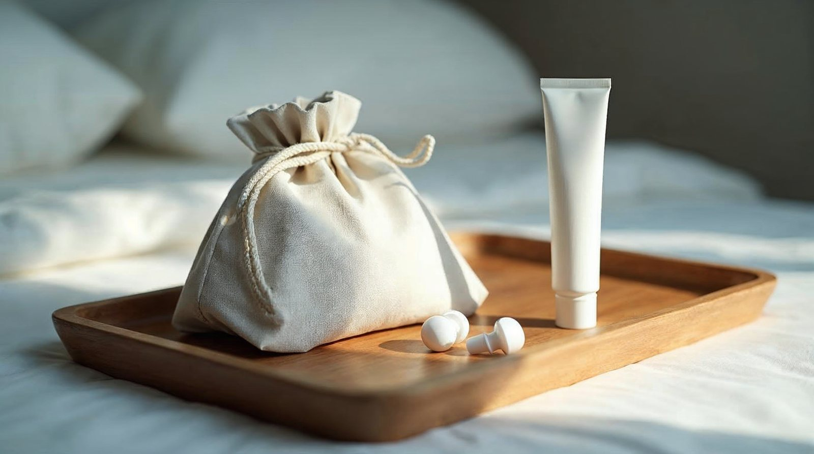
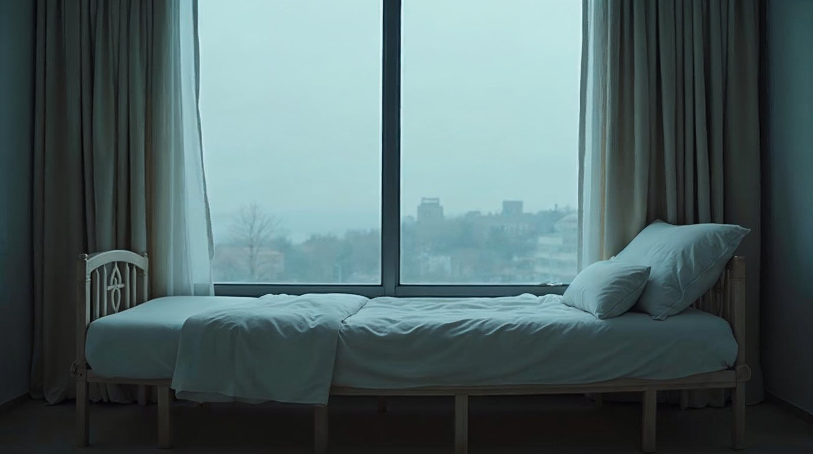
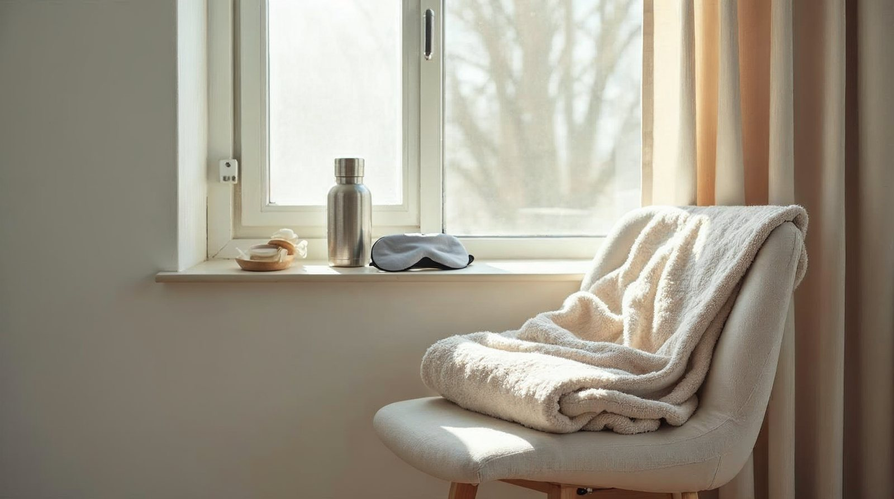
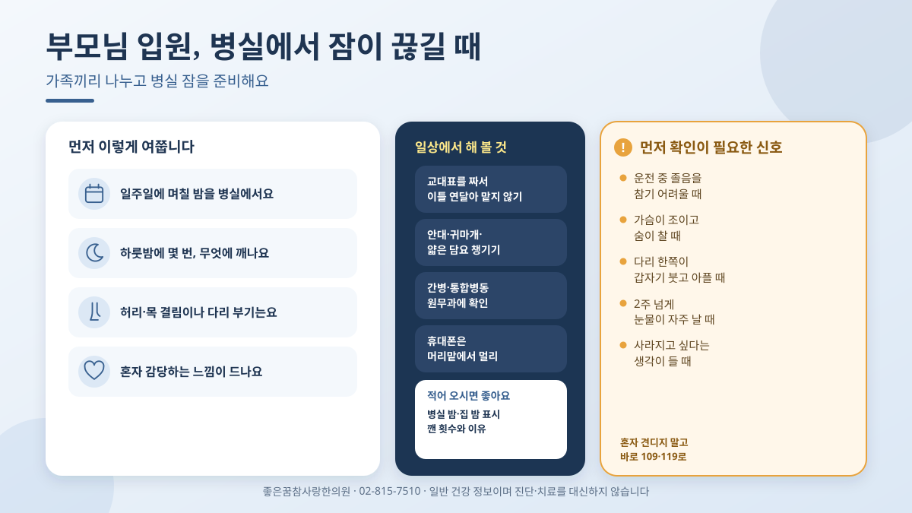

이종호 한의사 감수좋은꿈참사랑한의원 대표원장 (한의사 면허번호 19769)발행 2026-11-27 · 수정 2026-11-27
이 글의 차례
겨울에는 빙판길 낙상이나 폐렴, 지병 악화로 부모님이 갑자기 입원하시는 일이 적지 않아요. 낮에는 출근하고 밤에는 병실 보호자 침대에서 지내다 보면, 좁은 침대에서 뒤척일 때마다 깨고, 복도 불빛과 수액 펌프 알림음, 옆 침상의 기침 소리에 다시 깨고, 새벽 5~6시 혈압·체온 측정이나 채혈 때 완전히 잠이 달아나는 밤이 이어지죠.
무엇보다 부모님 상태가 걱정돼서, 몸은 누워 있어도 귀는 계속 열려 있는 반쯤 깨어 있는 잠을 자게 돼요. 그건 당연한 거예요. 마음이 거기 가 있으니까요.
그래서 저는 목표부터 바꾸자고 말씀드려요. '푹 자는 것'과 '덜 깨고 빨리 다시 잠드는 것'은 다른 얘기예요. 병실에서는 집에서처럼 푹 자기 어렵다는 걸 먼저 받아들이고, 목표를 뒤쪽으로 바꾸면 마음이 한결 편해질 수 있어요.
안대와 귀마개, 얇은 매트처럼 병실에서 쓸 준비물을 챙기세요. 가족끼리 교대표를 짜서 한 사람이 이틀 넘게 연달아 밤을 맡지 않도록 하고, 교대한 날에는 집에서 잠을 되찾는 순서를 정해 두시고요.
보호자 본인이 운전 중 졸음을 참기 어렵거나, 눈물이 자주 나고 마음이 무너지는 느낌이 2주 넘게 이어진다면 도움을 청하는 게 먼저예요.
왜 병실 보호자 침대에서는 잠이 자꾸 끊길까요
- 보호자 침대는 대개 폭이 좁고 길이가 짧으며 바닥이 딱딱합니다. 몸을 돌릴 때마다 침대 끝에 걸리고, 허리와 어깨가 배겨 깊은 잠에 들기 전에 깨기 쉽습니다.
- 병실은 밤에도 완전히 어두워지지 않습니다. 복도 조명과 기계 화면 불빛, 간호사가 확인하러 들어올 때 켜는 불이 잠을 여러 번 끊습니다.
- 수액 펌프와 감시 장치의 알림음, 옆 환자의 코골이와 기침, 다른 보호자의 통화 소리처럼 예측할 수 없는 소리가 이어집니다. 사람은 익숙하지 않은 소리에 더 쉽게 깹니다.
- 병원은 새벽 이른 시각에 혈압과 체온을 재고 채혈을 하는 경우가 많아, 그 시각 전후로 잠이 마무리되어 버립니다.
- 겨울 병실은 난방으로 건조해 입과 목이 마르고, 창가 쪽은 외풍이 들어 춥기도 합니다.
- 가장 큰 이유는 걱정입니다. 부모님이 숨을 잘 쉬시는지, 화장실에 혼자 가시다 넘어지지 않을지 신경 쓰느라 몸이 '경계 모드'에 머물러, 작은 기척에도 바로 깨게 됩니다.
- 낮에는 출근하고 밤에는 병원을 지키는 생활이 이어지면 잠이 매일 조금씩 부족해지고, 그 부족분이 쌓여 며칠 뒤 갑자기 몸이 무너지는 느낌이 들 수 있습니다.
- 한의학에서는 걱정과 과로가 함께 이어지면 마음을 담당하는 심과 소화를 맡은 비가 함께 지쳐, 잠이 얕고 꿈이 많으며 입맛이 떨어지고 가슴이 두근거리는 모습으로 나타난다고 보고, 이를 심비양허로 설명하기도 합니다.
먼저 이렇게 여쭙니다
- 부모님이 언제부터, 어떤 일로 입원해 계신지, 앞으로 얼마나 더 입원하실 예정인지 말씀하실 수 있는 만큼 여쭙니다.
- 일주일에 며칠 밤을 병실에서 보내는지, 교대해 줄 가족이나 간병인이 있는지 여쭙니다.
- 병실에서 하룻밤에 몇 번쯤 깨는지, 무엇 때문에 깨는지(소리, 불빛, 측정, 부모님 기척, 걱정) 여쭙니다.
- 병원에서 밤을 보낸 다음 날 출근을 하는지, 집에 와서는 잠을 보충할 수 있는지 여쭙니다.
- 허리, 목, 어깨가 결리거나 다리가 붓는 등 보호자 침대 때문에 생긴 몸의 불편이 있는지 여쭙니다.
- 끼니를 어떻게 챙기는지, 커피를 하루에 몇 잔 마시는지 여쭙니다.
- 운전 중 졸음이 오거나, 일하다 깜빡 조는 일이 있는지 여쭙니다.
- 마음이 많이 무겁거나 눈물이 자주 나는지, 혼자 감당하고 있다는 느낌이 드는지도 함께 여쭙니다.

일상에서 먼저 해 볼 수 있는 것
가족끼리 교대표 짜기
- 가족 단체 대화방에 일주일 교대표를 올려 두고, 한 사람이 이틀 넘게 연달아 밤을 맡지 않도록 나눕니다. 평일 밤과 주말 밤의 부담이 다르니 돌아가며 맡습니다.
- 멀리 사는 가족은 밤 대신 주말 낮이나 서류, 보험 처리, 병원 상담 일정 정리처럼 다른 일을 맡을 수 있습니다.
- 간병인을 구하거나 간호·간병통합서비스 병동을 이용할 수 있는지 병원 원무과나 간호사실에 물어봅니다. 병원과 병동마다 운영이 달라, 이용 가능 여부와 조건은 직접 확인해야 합니다.
- 부모님 상태가 안정적인 시기에는 '오늘 밤은 집에 가서 자고 아침 일찍 오겠다'는 선택도 의료진과 상의해 볼 수 있습니다.
병실 준비물 챙기기
- 안대, 귀마개(또는 소리를 줄여 주는 이어폰), 얇은 담요, 목베개, 실내용 슬리퍼를 작은 가방 하나에 넣어 두고 교대할 때 그대로 넘깁니다.
- 보호자 침대가 딱딱하다면 접이식 얇은 매트를 깔면 허리 부담이 덜할 수 있습니다. 병원마다 반입 규정이 다르니 미리 물어봅니다.
- 입술 보습제와 개인 물병, 마스크를 챙깁니다. 마스크는 건조한 공기에서 목이 덜 마르게 하고 감염을 막는 데도 도움이 됩니다.
- 긴 충전 케이블이 있으면 휴대폰을 머리맡에 두지 않고 떨어진 곳에서 충전할 수 있습니다.
병실에서 자는 방법
- 부모님의 저녁 투약과 소등이 끝나면 미루지 말고 바로 눕습니다. 병실의 조용한 시간은 길지 않아, 그 시간을 먼저 잡는 것이 좋습니다.
- 담당 간호사에게 새벽 측정이나 채혈 시각을 미리 물어 두면, 그 시각에 깨더라도 '예정된 일'로 받아들이기 쉽고 다시 잠들기도 수월합니다.
- 부모님이 밤에 화장실에 가셔야 한다면 침대 난간과 호출 벨 위치를 확인하고, 혼자 일어나지 마시고 부르시도록 미리 말씀드립니다. 정해진 약속이 있으면 보호자도 작은 기척마다 깨어 확인하는 일이 줄어듭니다.
- 깼을 때 휴대폰을 보지 않습니다. 화면 빛은 다시 잠드는 것을 방해하고, 인터넷에서 병에 대해 찾아보다 걱정이 커지기 쉽습니다.
- 다시 잠들기 어렵다면 누운 채 숨을 내쉴 때마다 어깨와 턱에서 힘이 빠지는 것을 느끼며 천천히 열 번쯤 내쉬어 봅니다.
교대한 날 집에서
- 병원에서 돌아온 날은 바로 씻고 가볍게 먹은 뒤 잠자리에 듭니다. 낮에 퇴근해 돌아왔다면 평소보다 30분~1시간 일찍 자는 것을 목표로 합니다.
- 다음 날이 쉬는 날이라면 오전에 1~2시간 더 자는 것은 괜찮지만, 오후 늦게까지 자면 그날 밤잠이 흐트러집니다.
- 자기 전 병원 소식 확인은 한 번만 하고, 급한 연락만 울리도록 휴대폰 알림을 정리합니다.
- 커피는 오후 2시 이후 줄이고, 졸음을 커피로만 버티지 않도록 점심 뒤 15~20분 짧게 눈을 붙이는 시간을 찾아봅니다.
보호자의 몸 챙기기
- 끼니를 편의점 김밥이나 컵라면으로만 때우지 않도록 삶은 달걀, 두유, 바나나처럼 간단한 단백질과 과일을 챙깁니다.
- 병원 복도나 1층 로비를 하루 10~15분 걷고, 보호자 침대에서 일어나면 허리와 목을 천천히 돌려 풉니다.
- 감기 기운이 있으면 다른 가족과 교대합니다. 몸이 약해진 부모님께 옮기지 않는 것도 돌봄입니다.

상황별 예시
- 예를 들어 어머니가 빙판길에서 넘어져 골절 수술을 받고 입원하신 40대 맞벌이 자녀가, 형제와 번갈아 병실을 지키며 하룻밤에 네다섯 번씩 깨고 다음 날 출근하는 생활을 일주일째 하는 경우, 교대표를 다시 짜 연달아 이틀 밤을 맡지 않도록 하고, 안대와 귀마개를 챙기며 새벽 측정 시각을 미리 물어 둡니다. 교대한 날은 퇴근 뒤 평소보다 한 시간 일찍 잠자리에 듭니다.
- 예를 들어 아버지가 폐렴으로 입원하셔서 밤새 기침하시는 소리에 계속 깨는 경우, 아버지 상태가 걱정되어 깨는 것인지 소리 때문에 깨는 것인지 나눠 봅니다. 기침이 심해지거나 숨이 가빠 보이면 혼자 지켜보지 말고 바로 간호사를 부르고, 상태가 안정적이라면 소리를 줄이는 귀마개를 써 봅니다.
- 예를 들어 혼자 부모님을 돌보는 외동 자녀가 2주 넘게 매일 밤 병실을 지키며 허리가 결리고 입맛이 떨어지며 낮에 회의 중 깜빡 조는 일이 생긴 경우, 간병인이나 간호·간병통합서비스 병동 이용이 가능한지 병원에 물어보고, 일주일에 하루 이틀이라도 집에서 자는 밤을 만들어 봅니다.
- 예를 들어 부모님이 퇴원하신 뒤에도 밤마다 작은 소리에 깜짝 놀라 깨고, 다시 잠들기 어려운 날이 이어지는 경우, 병실에서 생긴 '경계하는 잠'이 남아 있는 것일 수 있어 잠자리 환경을 다시 정리하고 2~3주 지켜봅니다. 그래도 이어지면 상담을 받아 보세요.
자주 하는 오해
- 보호자가 잠을 자면 부모님을 제대로 돌보지 못한다고 여기는 분이 많지만, 병실에는 의료진이 있고 호출 벨이 있습니다. 보호자가 쉬어야 다음 날도 곁을 지킬 수 있습니다.
- 내가 다 맡아야 한다며 혼자 밤을 계속 지키는 분도 있습니다. 돌봄은 길어질수록 나눠야 오래 이어 갈 수 있습니다.
- 병실에서 못 잔 잠은 주말에 몰아 자면 된다고 생각하기 쉽지만, 하루에 몰아 자는 것만으로는 며칠 동안 쌓인 부족을 다 메우기 어렵고 오히려 리듬이 흐트러질 수 있습니다.
- 졸음은 커피로 버티면 된다고 여기기 쉽지만, 잠이 부족한 상태에서 커피를 늘리면 정작 잘 수 있는 밤에 잠들기가 더 어려워집니다.
- 퇴원하시면 내 잠도 바로 돌아올 거라고 생각하기 쉽지만, 긴장이 남아 한동안 얕은 잠이 이어지는 분도 있습니다.

스스로 점검해 보세요
- 일주일에 사흘 넘게 병실에서 밤을 보낸다.
- 병실에서 하룻밤에 세 번 이상 깨고, 깬 뒤 다시 잠드는 데 30분 넘게 걸린다.
- 병원에서 밤을 보낸 다음 날 출근하거나 운전한다.
- 운전 중이나 회의 중에 깜빡 조는 일이 있었다.
- 보호자 침대에서 자고 나면 허리나 목이 결린다.
- 끼니를 거르거나 편의점 음식으로 때우는 날이 많다.
- 교대해 줄 사람이 없어 혼자 감당하고 있다는 느낌이 든다.
한의원에서 함께 살필 수 있는 경우
- 부모님 입원이나 돌봄으로 끊긴 잠이 2주 넘게 돌아오지 않는 경우
- 보호자 침대에서 지낸 뒤 허리, 목, 어깨가 결리고 다리가 붓는 경우
- 걱정과 피로가 겹쳐 입맛이 떨어지고 가슴이 두근거리며 꿈이 많은 경우
- 퇴원 뒤에도 작은 소리에 깜짝 놀라 깨는 잠이 이어지는 경우
좋은꿈참사랑한의원에서는 첫 방문 때 요즘 어떤 상황에서 지내고 계신지, 병실과 집에서의 잠이 각각 어떤지, 몸 어디가 불편한지를 차례로 여쭙습니다. 부모님 병환에 대해서는 말씀하실 수 있는 만큼만 들려주시면 됩니다. 그다음 맥부터 짚어 보고, 혀와 배를 살펴 피로와 소화 상태를 확인하며, 허리와 목, 어깨의 결림도 함께 봅니다.
그 뒤 교대한 날의 잠 순서, 병실에서 쓸 준비물, 끼니 챙기기처럼 지금 상황에서 할 수 있는 것을 함께 정하고, 필요하면 침이나 한약을 상의합니다. 평일은 저녁 8시까지, 토·일·공휴일은 오후 3시까지 진료하니, 병원과 한의원을 오가기 어려운 시기라면 교대 일정에 맞출 수 있는 시간을 방문 전 전화로 확인해 주세요.
다시 오시면 지난번 이야기를 이어서 여쭙고, 부모님 상황이 어떻게 달라졌는지와 함께 잠의 흐름을 살핍니다. 돌보는 분도 잠시 쉬다 가는 곳이 되었으면 합니다.
얼마나 지켜보고 언제 상담할까요
- 교대표 정리와 병실 준비물, 교대한 날의 잠 순서를 1~2주 이어 가며 병실과 집에서의 잠을 따로 기록합니다.
- 부모님이 퇴원하신 뒤에는 2~3주쯤 지켜보며 잠이 평소대로 돌아오는지 봅니다.
- 돌봄이 길어지면서 잠과 끼니가 계속 무너지거나, 몸의 결림과 피로 때문에 일상이 힘들다면 그때 상담을 받아 보세요.
- 아래 신호가 있으면 기다리지 말고 도움을 청합니다.
이렇게 기록해 오시면 상담이 쉬워집니다
- 1~2주 동안 병실에서 보낸 밤과 집에서 보낸 밤 표시
- 밤마다 깬 횟수와 깬 이유(소리, 불빛, 측정, 걱정)
- 다음 날 졸음 정도와 낮잠 여부, 커피 양
- 허리, 목, 어깨 결림이나 다리 붓기
- 끼니와 입맛 변화
- 복용 중인 약과 영양제
병실에 있다 보면 내 몸 상태는 기억에 잘 안 남아요. 휴대전화 메모에 하루 한 줄씩만 적어 두셔도 충분해요.
돌보는 일은 길게 가는 일이라, 보호자가 먼저 지치면 부모님 곁을 지키기도 어려워져요. 내 잠을 챙기는 건 이기적인 일이 아니에요.
부모님 곁은 가족분들이 지키시고, 지친 몸을 살피는 건 제가 할게요. 대신 하나만 부탁드려요. 교대하고 집에 간 날만큼은 다른 일보다 잠을 먼저 챙겨 주세요. 딴 건 할 수 있는 만큼만 하셔도 돼요.
부모님 이야기는 말씀하실 수 있는 만큼만 들려주시면 돼요. 오셔서 잠시 쉬다 가세요.
이런 증상은 먼저 확인이 필요합니다
- 운전 중 졸음을 참기 어렵거나, 깜빡 졸다 놀란 적이 있는 경우(이때는 운전을 멈추고 대중교통을 이용하세요)
- 가슴이 조이듯 아프고 숨이 차며 식은땀이 나는 경우
- 스스로를 해칠 생각이 들면 ☎ 109로 바로 연락하세요.
이런 신호가 있으면 한의원보다 가까운 병원이나 응급실을 먼저 찾으세요.
관련 글
- 밤에 부모님을 돌보느라 잠이 자주 끊길 때는 어떻게 살피나요?
- 돌보는 사람이 쉬는 것에 죄책감이 들 때는 어떻게 하나요?
- 아픈 가족을 오래 돌보며 몸과 마음이 지쳤을 때는 어떻게 하나요?

여쭙는 것
- 부모님이 언제부터, 어떤 일로 입원해 계신지, 앞으로 얼마나 더 입원하실 예정인지…
- 일주일에 며칠 밤을 병실에서 보내는지, 교대해 줄 가족이나 간병인이 있는지 여쭙니다.
- 병실에서 하룻밤에 몇 번쯤 깨는지, 무엇 때문에 깨는지(소리, 불빛, 측정, 부모님…
생활에서 해 볼 것
- 가족 단체 대화방에 일주일 교대표를 올려 두고, 한 사람이 이틀 넘게 연달아 밤을…
- 멀리 사는 가족은 밤 대신 주말 낮이나 서류, 보험 처리, 병원 상담 일정 정리처럼…
- 간병인을 구하거나 간호·간병통합서비스 병동을 이용할 수 있는지 병원 원무과나 간호사…
한의원에서 함께 살필 것
- 부모님 입원이나 돌봄으로 끊긴 잠이 2주 넘게 돌아오지 않는 경우
- 보호자 침대에서 지낸 뒤 허리, 목, 어깨가 결리고 다리가 붓는 경우
- 걱정과 피로가 겹쳐 입맛이 떨어지고 가슴이 두근거리며 꿈이 많은 경우
먼저 확인이 필요한 신호
- 운전 중 졸음을 참기 어렵거나, 깜빡 졸다 놀란 적이 있는 경우(이때는 운전을 멈추…
- 가슴이 조이듯 아프고 숨이 차며 식은땀이 나는 경우
- 스스로를 해칠 생각이 들면 109로 바로 연락하세요.
한눈에 보는 표
| 구분 | 핵심 |
|---|---|
| 여쭙는 것 | 부모님이 언제부터, 어떤 일로 입원해 계신지, 앞으로 얼마나 더 입원하실 예정인지 말씀하실 수 있는 만큼 여쭙니다. 일주일에 며칠 밤을 병실에서 보내는지, 교대해 줄 가족이나 간병인이 있는지 여쭙니다. |
| 생활에서 해 볼 것 | 가족 단체 대화방에 일주일 교대표를 올려 두고, 한 사람이 이틀 넘게 연달아 밤을 맡지 않도록 나눕니다. 평일 밤과 주말 밤의 부담이 다르니 돌아가며 맡습니다. 멀리 사는 가족은 밤 대신 주말 낮이나 서류, 보험 처리, 병원 상담 일정 정리처럼 다른 일을 맡을 수 있습니다. |
| 한의원에서 함께 살필 것 | 부모님 입원이나 돌봄으로 끊긴 잠이 2주 넘게 돌아오지 않는 경우 보호자 침대에서 지낸 뒤 허리, 목, 어깨가 결리고 다리가 붓는 경우 |
| 먼저 확인이 필요한 신호 | 운전 중 졸음을 참기 어렵거나, 깜빡 졸다 놀란 적이 있는 경우(이때는 운전을 멈추고 대중교통을 이용하세요) 가슴이 조이듯 아프고 숨이 차며 식은땀이 나는 경우 |
자주 묻는 질문
병실에서는 어차피 못 자는데 준비물을 챙길 필요가 있을까요?
병실에서 집처럼 푹 자기는 어렵지만, 안대와 귀마개, 얇은 매트처럼 작은 준비물로 깨는 횟수를 줄이고 다시 잠들기 쉽게 만들 수 있습니다. 반입 가능한 물품은 병원마다 다르니 미리 물어보세요.
교대해 줄 가족이 없으면 어떻게 하나요?
간병인을 구하거나 간호·간병통합서비스 병동을 이용할 수 있는지 병원 원무과나 간호사실에 물어보세요. 부모님 상태가 안정적인 시기에는 일주일에 하루 이틀이라도 집에서 자는 밤을 만들 수 있는지 의료진과 상의해 보세요.
병원에서 밤새고 출근한 날 운전해도 될까요?
잠이 크게 부족한 날에는 운전을 피하고 대중교통을 이용하는 편이 안전합니다. 운전 중 졸음이 오면 바로 안전한 곳에 차를 세우고 쉬세요.
부모님 퇴원 뒤에도 잠이 얕은데 돌아올까요?
병실에서 이어진 긴장이 한동안 남아 작은 소리에도 깨는 분이 있습니다. 2~3주쯤 잠자리 환경과 리듬을 정리하며 지켜보고, 그래도 이어지면 상담을 받아 보세요.
돌보는 중이라 시간이 없는데 한의원 진료는 언제 받을 수 있나요?
평일은 오전 9시 30분부터 오후 8시까지(점심 오후 1~2시), 토·일·공휴일은 오전 9시 30분부터 오후 3시까지 점심시간 없이 진료합니다. 교대 일정에 맞춰 오실 수 있는 시간을 02-815-7510으로 전화해 확인해 주세요.
좋은꿈참사랑한의원은 재진 때 지난번 이야기부터 이어서 여쭙니다. 진료시간과 예약은 오시는 길에서 확인하세요.
어디서 상담받을 수 있나요?
좋은꿈참사랑한의원은 서울 동작구 만양로2길 2 신성빌딩 3층·5층(서울 동작구 상도동, 7호선 상도역 3번 출구 근처)에 있습니다. 한의사 3명(이종호 대표원장, 조영기 수석진료원장, 정원영 진료원장)이 진료합니다. 진료시간은 평일 09:30~20:00(점심 13:00~14:00), 토·일·공휴일 09:30~15:00이며, 방문 전 전화로 확인을 권합니다. 예약은 네이버 예약, 카카오톡 상담, 전화 02-815-7510로 받습니다.
이 글은 일반적인 건강 정보이며 개인의 진단이나 치료를 대신하지 않습니다. 증상이 있거나 복용 중인 약이 있다면 진료를 통해 확인하세요. 치료 효과는 개인마다 다를 수 있습니다.
작성 기준: 일반적으로 알려져 있는 건강 정보를 참고해 정리했습니다(대표원장 감수). 증상 기록은 1~2주 동안 하루 1회, 비슷한 시간에 적어 오시면 지난 상태와 비교하기 쉽습니다.